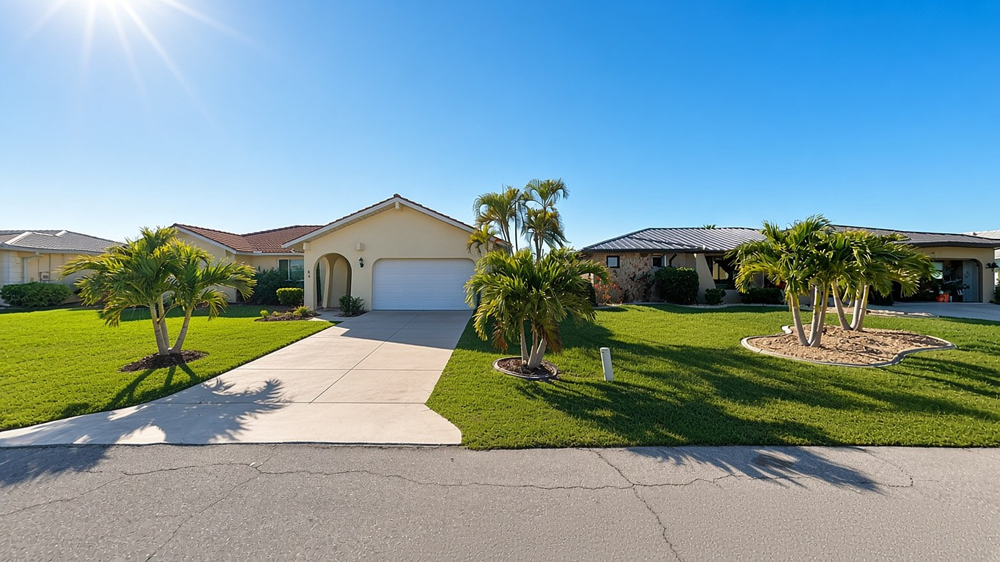

Draft preview for review. Not published. Expand Existing Page for /explore/punta-gorda/punta-gorda-isles/. Goes live 2026-12-01. Images shown from local copies. Rollout batch
Punta Gorda Isles Homes for Sale: Sections, Canal Fees, and What 4,700 Homes Are Worth

Explore · Punta Gorda · Punta Gorda Isles
Punta Gorda Isles is the city's canal neighborhood: about 4,717 single-family homes, nearly all on the water, spread across numbered sections west and south of downtown.
If you have read our year on the canal in Punta Gorda Isles, you know what daily life feels like here. This page is the buyer's view: which sections are which, what the county says homes are worth, what the canal district costs, and what to check before you write an offer on Punta Gorda Isles homes for sale.
The short version
Mostly waterfront. 96 percent of PGI single-family parcels carry the county's waterfront flag, and 92 percent have a pool.
Built over six decades. Year built runs from 1959 to 2026; the median home was built in 1990.
Canal district. The city's PGI district covers 91 miles of seawall and 45 miles of canals and inlets. FY2026 assessment: $1,350 per single-family parcel.
Sections matter. Older sections near downtown and newer sections to the south price and build very differently.
4,717
single-family parcels in the PGI sections
$540,000
median county just value, single-family
$700,000
median qualified sale, 2025 and 2026
$1,350
FY2026 PGI canal assessment per home
Source: Charlotte County Property Appraiser, parcel file and subdivision list (downloaded Nov 20, 2026); City of Punta Gorda, Special Assessments.
Definition
What counts as Punta Gorda Isles
A recorded subdivision with numbered sections.
Punta Gorda Isles is a recorded subdivision in the City of Punta Gorda, platted in numbered sections. The canal sections in ZIP 33950 west and south of downtown are what most people mean by PGI. Several later sections carry their own names: Section 15 is Burnt Store Isles, Section 16 is Burnt Store Village, Section 18 is Burnt Store Meadows, Sections 20 and 23 are Deep Creek, and Section 21 is Burnt Store Lakes.
Those named sections are different places with different rules, so they each get their own page: Burnt Store Isles, Burnt Store Meadows, Burnt Store Lakes, and Deep Creek. The rest of this page covers the PGI canal sections inside the city's Punta Gorda Isles canal district.
Source: Charlotte County Property Appraiser, parcel file and subdivision list (downloaded Nov 20, 2026).
Sections
Punta Gorda Isles sections, compared
Ten sections hold almost every home.
The biggest PGI sections by number of homes are Section 14 (1,124 single-family parcels), Section 12 (981), Section 5 (592), and Section 7 (502). Sections 2 through 7 were mostly built in the late 1970s and 1980s; Sections 11, 12, and 14 have a median build year of 1998 and higher median values.
| Section | Main streets | Homes | Median year built | Median just value |
|---|---|---|---|---|
| Section 2 | Hibiscus Dr, Coral Way, Colony Point Dr | 151 | 1982 | $479,000 |
| Section 3 | Hibiscus Dr, Colony Point Dr, Bay Ct | 53 | 1979 | $464,000 |
| Section 4 | Tropicana Dr, Palm Tree Dr, Sabal Dr | 358 | 1981 | $485,000 |
| Section 5 | Via Esplanade, Bal Harbor Blvd, Belvedere Ct | 592 | 1979 | $447,000 |
| Section 6 | Via Veneto, Brazilia Ct, Parisian Ct | 377 | 1986 | $527,000 |
| Section 7 | Via Tunis, Via Tripoli, Santa Margerita Ln | 502 | 1981 | $463,000 |
| Section 11 | Via Formia, Caicos Dr, Bimini Ln | 347 | 1998 | $565,000 |
| Section 12 | Deborah Dr, La Costa Island Ct, Ryan Blvd | 981 | 1998 | $630,000 |
| Section 14 | Almar Dr, Whip-Poor-Will Blvd, Pine Siskin Dr | 1,124 | 1998 | $580,000 |
| Section 17 | Don Quixote Dr, La Mancha Ct, Sancho Panza Ct | 99 | 1988 | $556,000 |
County figures come from the Charlotte County Property Appraiser's public parcel file (downloaded November 20, 2026). Just value is the county's market value estimate on the latest certified roll, not an appraisal or a list price. Sale figures use each parcel's most recent recorded sale when that sale was qualified and dated 2025 or 2026. Section 5 includes Bal Harbor Boulevard; smaller sections (1, 8, 9, 10, 24, 26, 27) are left out of the table.
Source: Charlotte County Property Appraiser, parcel file and subdivision list (downloaded Nov 20, 2026).

A typical Punta Gorda Isles street.
Canals
The PGI canal district and what it costs
A city district maintains the seawalls.
The City of Punta Gorda runs a canal maintenance assessment district for Punta Gorda Isles that repairs and replaces city-owned seawalls, dredges canals and inlets, and manages mangroves. It covers 91 miles of seawall and 45 miles of canals and inlets, and it is funded by a non-ad valorem assessment on each parcel's tax bill.
| Fiscal year | Assessment |
|---|---|
| FY2021 | $550 |
| FY2022 | $650 |
| FY2023 | $950 |
| FY2024 | $1,100 |
| FY2025 | $1,200 |
| FY2026 | $1,350 |
A five-member resident advisory committee recommends the rate each year, and City Council adopts it at the September budget hearing. The district was created in 1996. Because the seawalls are city-maintained, ask the seller about the condition of the seawall and cap anyway; it affects the dock, the lift, and your insurance inspection.
Source: City of Punta Gorda, Canal Maintenance Assessment Districts; City of Punta Gorda, Special Assessments.
Homes
Punta Gorda Isles homes for sale: what you will find
Pool homes on the water, from 1960s to new.
Most PGI homes are single-story pool homes on a canal. The median home has about 2,185 square feet of living area. About 24 percent were built before 1980, and about 33 percent in 2000 or later, often replacing an older house on the same lot. The middle half of county just values runs from about $438,000 to $700,000.
Older sections
1970s and 1980s canal homes
Sections 2 to 7. Often the lower price per square foot on the water. Updates vary a lot.
Check
Roof, windows, wiring, plumbing
Newer sections
1990s and 2000s homes
Sections 11, 12, and 14. Larger homes and higher median values.
Check
Wind mitigation features
Rebuilds
New homes on old lots
Scattered across every section. Expect the highest prices.
Check
Permits and final inspections
For boaters, the canal a home sits on matters as much as the house. Our boater buying guide for waterfront homes covers what to check on any canal, and our wind mitigation guide explains the report that can lower an insurance premium.
Source: Charlotte County Property Appraiser, parcel file and subdivision list (downloaded Nov 20, 2026).
Before you buy
Five checks for any Punta Gorda Isles home
Water homes have more paperwork.
Before buying in Punta Gorda Isles, confirm the canal route and any bridges to Charlotte Harbor, the seawall and dock condition, the flood zone and insurance quotes, open permits, and the current canal assessment on the tax bill.
Route to the harbor
Ask how the canal connects to Charlotte Harbor, and measure any bridge clearance against your boat.
Seawall, dock, and lift
The city maintains seawalls; docks and lifts are yours. Get them inspected.
Flood zone and insurance
Pull the FEMA flood zone and get wind and flood quotes during your inspection period.
Permits
Look up permits on the county system so you know what work was approved and finished.
Taxes and assessments
Budget city and county taxes plus the canal assessment, and check homestead savings.
Start with our Punta Gorda homeowners insurance guide, our homestead exemption guide, and our property appraiser how-to for looking up any address.
Source: FEMA Flood Map Service Center; Charlotte County residential permits.
Community
Clubs and the civic association
A social neighborhood.
The Punta Gorda Isles Civic Association is a membership group based at 2001 Shreve Street. It runs clubs and activities for boating and paddling, fishing, tennis, cars, social events, and community service. It is separate from the city's canal district.
Downtown Punta Gorda, the Harborwalk, and Fishermen's Village are close by. See our things to do in Punta Gorda and our Downtown Punta Gorda and Historic District page.
Source: Punta Gorda Isles Civic Association.
FAQs
Punta Gorda Isles: common questions
How many homes are in Punta Gorda Isles?
The Charlotte County parcel file lists about 4,717 single-family parcels in the Punta Gorda Isles sections inside the PGI canal district, not counting Burnt Store Isles (Section 15), which has its own district.
What is the Punta Gorda Isles canal assessment?
The City of Punta Gorda set the FY2026 Punta Gorda Isles canal maintenance assessment at $1,350 per single-family parcel. It funds seawall repair and replacement, dredging, and mangrove management for the district.
Is Burnt Store Isles part of Punta Gorda Isles?
On paper, yes. Burnt Store Isles is recorded as Punta Gorda Isles Section 15, but it has its own canal maintenance district, its own assessment, and its own civic association, so we cover it on a separate page.
What do homes in Punta Gorda Isles cost?
Across the PGI sections, the median county just value for a single-family home is about $540,000, and the median recorded price of qualified 2025 and 2026 home sales is about $700,000. Prices swing widely by canal, view, and age, so compare recent sales on the same canal.
Are Punta Gorda Isles homes in the city limits?
Yes. The PGI sections covered here are inside the City of Punta Gorda, so owners pay city and county property taxes plus the canal assessment.
What is the Punta Gorda Isles Civic Association?
PGICA is a membership civic group at 2001 Shreve Street with clubs for boating and paddling, fishing, tennis, social events, and more. It is separate from the city's canal district.
Looking at Punta Gorda Isles homes for sale?
Tell us the boat, the budget, and the section you like. We will pull recent sales on that canal, the permit history, and the flood zone before you tour. Call or text The Helgemo Team at (941) 770-2275.
The office is at 320 Cross Street, Punta Gorda, Florida 33950. You can also meet Brian Helgemo or read more about the team.
Sources: Charlotte County Property Appraiser, parcel file and subdivision list (downloaded Nov 20, 2026); City of Punta Gorda, Canal Maintenance Assessment Districts; City of Punta Gorda, Special Assessments; Punta Gorda Isles Civic Association; FEMA Flood Map Service Center. Checked November 20, 2026.